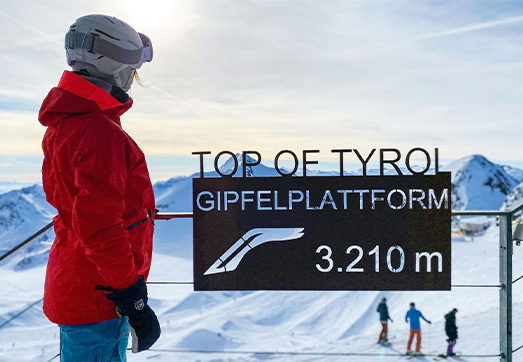
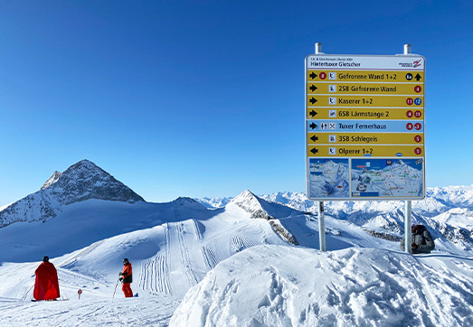
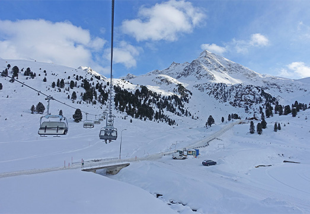

1. Stubaier Gletscher
De Stubaier Gletscher heeft wel 100 km aan pistes en behoort dit gebied tot de grootste gletsjers van Oostenrijk. Als skiliefhebber is dit top, want de sneeuw is in de herfst of lente nog goed! De gletsjer heeft een maximale hoogte van 3210 meter. Op dit punt bereik je de “Top of Tyrol” waar je een prachtig uitzicht kunt zien. Je vindt hier leuke funparken en skiroutes voor toerskiërs.

2. Hintertuxer Gletscher
De Hintertuxer Gletscher is maar liefst 365 dagen per jaar open! Dit betekent dus dat er altijd sneeuw zou liggen. Je hebt ruim 65 km aan pistes in het hoogseizoen en in de zomer zelfs nog 20 km. Je staat al vrij snel vanuit Hintertuxer op de gletsjer en bereik je de maximale hoogte van 3250 meter. Ook zijn er nog leuke berghutten, funparken en kidslope in dit gebied.

3. Kühtai
Kühtai ligt op 2020 meter hoogte in het dorpje Ötztal en is het daarmee het hoogst gelegen wintersportdorp in Oostenrijk. Het bereikt een maximale hoogte van 2520 meter en is ontzetten sneeuwzeker. Je hebt toegang tot 40 km aan pistes die aan beide kanten van het dorp liggen. Ook een leuk weetje over dit gebied: de meeste activiteiten liggen gewoon aan de piste! Het gebied heeft niet hele lange afdalingen, maximaal 3 km. Dit komt omdat de pistes maar een hoogteverschil van 500 meter overbruggen. Verder zijn de pistes lekker breed en zijn de hutten niet heel druk. Als je met de auto komt, vergeet dan niet de sneeuwkettingen mee te nemen! Het is regelmatig bedekt met een laag sneeuw.
